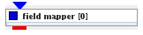
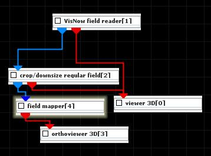
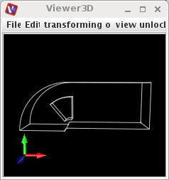
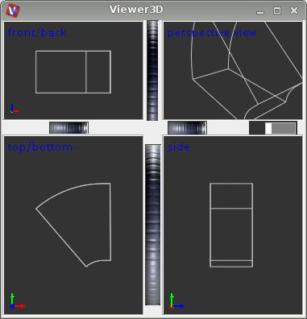

|
|
|

visualizes any field by its bounds and (optionally) colored outer surface
| input port | type | description | data acceptors |
|---|---|---|---|
| inField | VNField | Regular Field Irregular Field |
|
| output port | type | description | data schemas |
| outObj | VNGeometryObject |
FIELD MAPPER
The field mapper module produces a geometry object of a field.
Input data
The input field is regular o irregular.
Output data
At output there is a geometry object.
Presentation parameters
Presentation tab contents are described in the common interfaces section unter the Presentation Panel entry.
Example

Choose the modules VisNow field reader from regular data readers library, crop/downsize regular field from data filters module and field mapper from general mappers and accessories library and orthoviewer 3D module and connect them. Crop the data in the crop/downsize regular field module UI.

